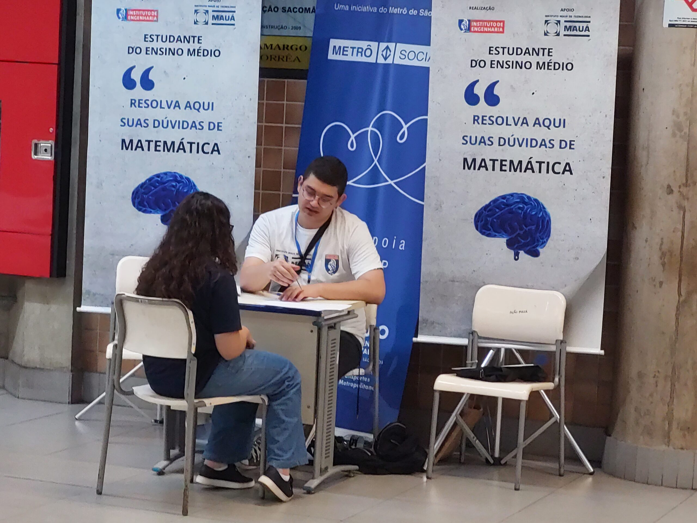

Bem-vindo ao Metrô de São Paulo
Saiba sobre o projeto Mátemática no metrô.
Saiba sobre
Nesta semana, a estação Sacomã, da Linha 2-Verde, torna-se sala de aula, com o início do projeto “Resolva aqui suas dúvidas de matemática”, uma parceria entre o Instituto de Engenharia de São Paulo e o Metrô Social, com o apoio do Instituto Mauá de Tecnologia.
A atividade consiste em proporcionar aos estudantes do ensino médio e passageiros do transporte metropolitano, aulas gratuitas, ministradas por alunos do primeiro ano de engenharia da Escola de Engenharia Mauá, que desempenharão essa função como voluntários.
Começando nesta segunda-feira (23), das 14h às 20h a ação será realizada semanalmente, às segundas-feiras, a exceção de feriados, até o dia 28 de outubro de 2024.
Linhas do Metrô

Descubra as linhas disponíveis no Metrô de São Paulo e as estações que cada uma cobre.
Horários
Confira os horários de funcionamento das linhas do Metrô de São Paulo, incluindo as primeiras e últimas partidas.
Tarifas
Veja as tarifas atualizadas para viagens no Metrô de São Paulo. Tarifas especiais estão disponíveis para estudantes e idosos.
Contato
Para mais informações, entre em contato pelo telefone (11) 0800-7707722 ou envie um e-mail para contato@metrosp.com.br.
Siga-nos no Instagram